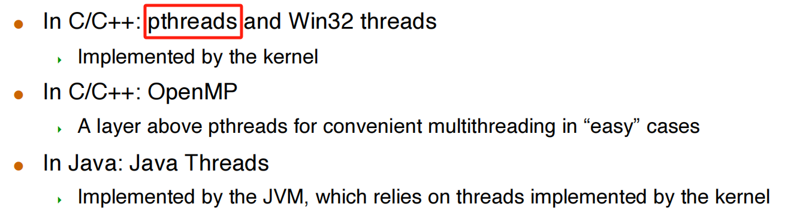
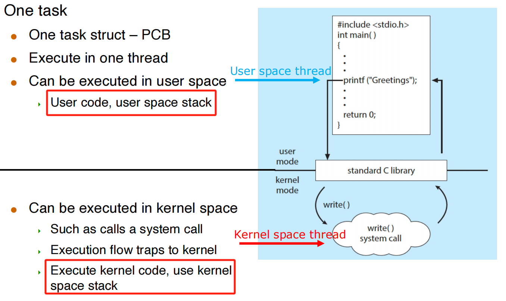

5 IPC
Inter-Process Communications (IPCs)¶
- Processes within a system may be independent or cooperating
- Independent process: process that cannot affect or be affected by the execution of another process
- Cooperating process: processes that can affect or be affected by other processes, including sharing data
- 4 Reasons for cooperating processes: information sharing, computation speedup, modularity, convenience, Security
Two models of IPC¶
- Shared memory
- Low-overhead: a few syscalls initially, and then none
- More convenient for the user since we’re used to simply reading/writing from/to RAM
- More difficult to implement in the OS
- Note that this is really contrary to the memory protection idea central to multi programming!
- Major issues is to provide mechanism that will allow the user processes to synchronize their actions when they access shared memory
- Message passing
- High-overhead: one syscall per communication operation
- Useful for exchanging small amounts of data
- Sometimes cumbersome for the user as code is sprinkled with send/recv operations
- Simple to implement in the OS

Synchronization¶

Pipes¶
- Ordinary pipes – cannot be accessed from outside the process that created it. Typically, a parent process creates a pipe and uses it to communicate with a child process that it created.
- Named pipes – can be accessed without a parent-child relationship.
ordinary pipes¶
Named pips¶
- Named Pipes are more powerful than ordinary pipes
- Communication is bidirectional
- No parent-child relationship is necessary between the communicating processes
- Several processes can use the named pipe for communication
- Provided on both UNIX and Windows systems
Unix pipes¶
- In UNIX, a pipe is mono-directional
- Two pipes must be used for bi-directional communication
- One talks of the write-end and the read-end of a pipe
- The “pipe” command-line feature, ‘|’, corresponds to a pipe
Threads¶
- A thread is a basic unit of execution within a process
- Each thread has its own
- Thread ID
- Program counter
- Register set
- Stack
- It shares the following with other threads within the same process
- Code section
- Data section
- Heap (dynamically allocated memory)
- Open files and signals
- Concurrency: A multi-threaded process can do multiple things at once
Single-threaded vs. Multithreaded
Question
在 multihreaded process 中，某一线程能否访问其他线程的栈？
一般不会，但是不阻止。
Advantages¶
- Economy:
- Creating a thread is cheap
- Code, data and heap are already in memory
- Context-switching between threads is cheap
- Creating a thread is cheap
- Resource Sharing:
- Threads naturally share memory
- Having concurrent activities in the same address space is very powerful
- But fraught with danger
- Threads naturally share memory
- Responsiveness:
- A program that has concurrent activities is more responsive
- This is true of processes as well, but with threads we have better sharing and economy
- Scalability:
- Running multiple “threads” at once uses the machine more effectively
Drawbacks¶
- Weak isolation between threads:
- If one thread fails (e.g., a segfault), then the process fails.
- Threads may be more memory-constrained than processes
- Due to OS limitation of the address space size of a single process
- Threads do not benefit from memory protection
- Concurrent programming with Threads is hard
Multi-Threading Challenges¶
- Deal with data dependency and synchronization
- Dividing activities among threads
- Balancing load among threads
- Split data among threads
- Testing and debugging
User Threads vs. Kernel Threads¶
Many-to-One Model¶
- Advantage: multi-threading is efficient and low-overhead
- No syscalls to the kernel
- Drawback:
- cannot take advantage of a multi-core architecture!
- if one threads blocks, then all the others do!
One-to-One Model (used on linux, windows and so on)¶
- Advantage: Removes both drawbacks of the Many-to-One Model
- Creating a new threads requires work by the kernel
- Drawback: Not as fast as in the Many-to-One Model; expensive
Many-to-Many Model & Two-Level Model¶
difficult to shedule
Thread Libraries¶
Thread libraries provide users with ways to create threads in their own programs.

Pthreads:¶
- May be provided either as user-level or kernel-level
- A POSIX standard (IEEE 1003.1c) API for thread creation and synchronization
- Specification, not implementation
- API specifies behavior of the thread library, implementation is up to development of the library
- Common in UNIX operating systems (Linux & Mac OS X)
OpenMP¶
- Set of compiler directives and an API for C, C++, FORTRAN
- Provides support for parallel programming in shared-memory environments
- Identifies parallel regions – blocks of code that can run in parallel
Threading Issues¶
Semantics of fork() and exec()¶
Signals¶
- We’ve talked about signals for processes
- Signal handlers are either default or user-specified
- signal() and kill() are the system calls
- In a multi-threaded program, what happens? Multiple options
- Deliver the signal to the thread to which the signal applies
- Deliver the signal to every thread in the process
- Deliver the signal to certain threads in the process
- Assign a specific thread to receive all signals
- Most UNIX versions: a thread can say which signals it accepts, and which signals it doesn’t accept
Safe Thread Cancellation¶
One potentially useful feature would be for a thread to simply terminate another thread. Two possible approaches: - Asynchronous cancellation - One thread terminates another immediately - Deferred cancellation - A thread periodically checks whether it should terminate
Linux threads¶
Linux does not distinguish between PCB and TCB (Kernel data structure: task_struct).
In Linux, a thread is also called a light-weight process (LWP)
The clone() syscall is used to create a thread or a process - Shares execution context with its parent - pthread library uses clone() to implement threads
Single-threaded process vs. multi-threaded process

What's shared for Threads within Process ?

User thread to kernel thread mapping¶

整个进程只需要一个 control block，且放在 kernel space 中；进程可以是多线程的。
Summary
- Same task_struct (PCB) means same thread
- Also viewed as 1:1 mapping; One user thread maps to one kernel thread
- But actually, they are the same thread
- Can be executed in user space
- User code, user space stack
- Can be executed in kernel space
- Kernel code, kernel space stack